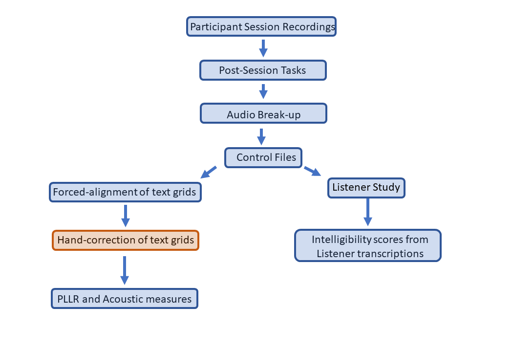
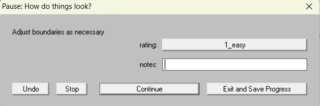
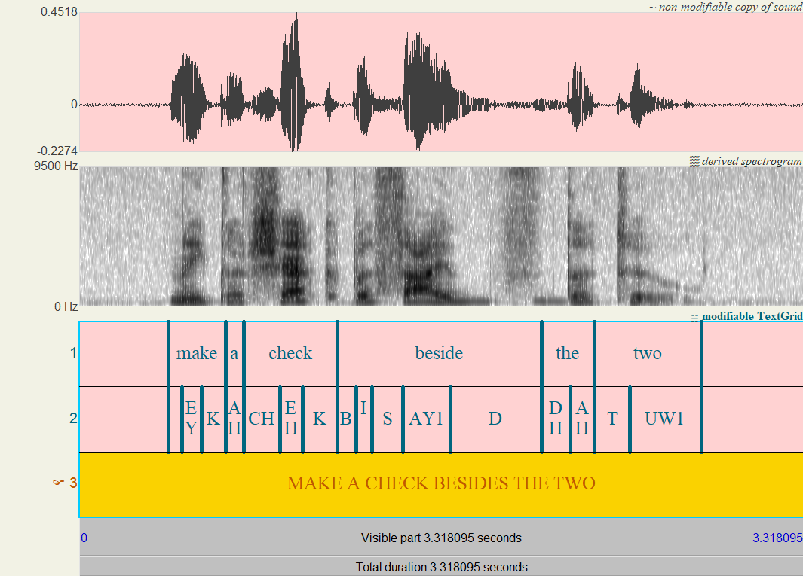
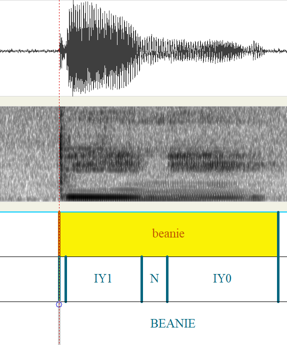

Alignment Guide
WISC Lab guide to hand-correction of force-aligned text grids
Written by Lucas Annear
Published by Henry Nomeland
Contents
a. Forced alignment and text grids
2. Over-arching questions and principles
Documenting questions and issues
5. Beginning-of-utterance issues
a. Initial consonants, when to start
Stop consonants and affricates - p, t, k, b, d, g, ch, j
Fricatives - s, z, h, sh, zh, f, v, th, dh
b. Word-initial vowels and glides, when to start
Potential Issues with initial vowels and glides
a. Consonant-to-vowel transitions within a word
b. Consonant-to-vowel transitions across word boundaries
c. Consonant-to-consonant transitions
e. Vowel-to-voiceless consonant transitions
f. Vowel to voiced consonant transitions
a. Final-consonant to end-of-utterance transition
b. Final vowel to end-of-utterance transition
c. Final vowel potential issues
1. Introduction
a. Forced alignment and text grids
In the WISC Lab we have audio recordings of children with typical speech development and with speech and motor impairments due to Cerebral Palsy. In these recordings the child is repeating words and phrases from the Test of Children’s Speech (the TOCS, as we know them by). Examples include phrases like “Cowboy boots” and “Put all the toys away”. We then use the recordings of these phrases to calculate articulation rate, speech sound accuracy, as well as to get measures of how intelligible the child is. Figure 3 below shows what it looks like if we open the file “The sign says keep out” all by itself in the program Praat.
We can see the waveform (top) and the spectrogram (bottom), but what if we want to keep track of how long different words and sounds are?

Marking the start and end points of sounds and words in a recording is useful for a variety of research purposes. However, we can’t make marks/annotations directly in the sound file, so to do this we need to create a separate file that stores all of the locations of events like the start and end of a word or sound.
The tool that we use to create a separate document containing annotations and labels for different words and sounds is called a forced aligner. A forced aligner takes an audio file (typically a .wav file) and a transcription of what was said in the audio file (usually a .txt or .lab file) and uses speech recognition technology to create a new file called a text grid that is designed to be paired with the audio file. The text grid has boundaries and labels indicating the locations of the words and phonemes in the audio file.
A text grid file is associated with a given audio file and has moveable boundaries and labels to note the occurrence of certain events (like the beginning and end of a vowel) that may be useful for research. Figure 4 below shows what that same audio file (“The sign says keep out”) looks like when opened together with the text grid that was created for that sound file by Montreal Forced Aligner. The text grids we create for the lab contain separate tiers for words, sounds, and the sentence containing them. Each tier has intervals with vertical boundaries separating words and sounds. These files (the text grid and wav file) can be used for automated retrieval of acoustic data such as duration of a word/sound, formant frequencies of vowels, and other variables of interest.

We can open these text grids along with the audio file in a program called Praat (Dutch for “speech”, sounds like “praht” - /pra:t/). When the text grids and audio files are paired together in Praat, it is now easier and quicker for us to make measurements because we have labels for each word and sound, as well as the time intervals during which these events occur.
b. Hand-correction
Forced aligners are not perfect, however. When a forced aligner creates a text grid, the initial placement of boundaries for words and sounds may not be accurate. During the hand-correction process, you will be adjusting boundaries in text grids that have been automatically created using the Montreal Forced Aligner (MFA for short). When Montreal Forced Aligner pairs a typed transcription with an audio file, it frequently does a pretty good job of putting boundaries in place, and the boundaries might just need some slight shifting, or even no adjustment at all. Other times, the boundaries are placed at the wrong times, and even placed at a time at which an entirely different word is being produced. These boundaries require hand-correction.
Your job is to ensure that those boundaries have been placed where they ought to go. This document that you are reading now is intended to help you understand what you are looking at when you look at audio recordings in Praat (or any program that shows a spectrogram and waveform), and it is designed to be a guide for decision-making when boundary placement is difficult to determine.
Figure 5 shows a text grid prior to hand-correction, and Figure 6 shows the same text grid but with black and gold squares overlaid on the image to show where the word boundaries actually are. Figure 7 then shows what the text grid looks like after hand-correction.


2. Over-arching questions and principles:
While the remainder of the document shows specific examples of where boundaries should be placed in certain circumstances, there are just a few main overarching principles to keep in mind. Use the principles immediately below, along with circumstances documented in the table of contents to help you make more efficient decisions regarding boundary placement.
What counts as speech?
We’re counting as speech any sound generated by the articulators that carries information about the sounds produced in the utterance.When should a boundary be moved?
Boundaries should remain where they were placed by the forced aligner unless you have visual or auditory evidence from the spectrogram/waveform and recording that a given boundary does not line up with either the beginning or end of a sound.
3. Using Praat
Download Praat
If you don’t have Praat on your computer yet, download Praat: https://www.fon.hum.uva.nl/praat/
The download gives you a .zip file, which you can then extract to your Desktop for convenience: Right click on zip folder > Extract all > Browse > select Desktop
Set Praat as default program for opening .praat files
On Windows machines: right click on any .praat file, and select “Properties”. Under Opens with, select Change and select Praat as the program that automatically opens .praat files (navigate to wherever Praat is saved on your computer. It may be on your desktop, it may be in Program Files).
Praat shortcuts
Zoom in – ctrl + I
Zoom out – ctrl + O
Zoom to selection – ctrl + N
Select next interval/tier – alt + arrow keys
Remove boundary – click on or after a boundary, and type alt + backspace (do this for each tier that a boundary needs to be deleted on)
4. Hand-correction
Placement of boundaries
- We place boundaries at the beginnings and ends of events. For example, we place a boundary at the beginning and at the end of a sound. In practice, this boundary is often just ever so slightly before the event that we’re marking then and ever so slightly following that event. For two continuous events, the end of one sound is generally the beginning of the next unless there is a clear pause.
The remainder of this document is a guide to boundary placement for different types of sounds, and for different positions in words and utterances. Use the Table of Contents above or the Navigation bar to the left to help you navigate to relevant sections within the document.
How different sounds appear on the spectrogram in Praat
Vowels
Darker energy - Vowels appear as dark regions of energy with visible pulses as a result of vocal fold vibration.
Formants - You will generally see line-like regions called formants. Formants are frequency regions that are emphasized by a given vocal tract configuration, and differ from vowel to vowel. The screenshot below shows the word TOYS, with the vowel OY1 highlighted. Note the formant structure and how one of the formants rises as the diphthong changes from /o/ to /i/.
Liquids
L often looks similar to vowels, with highest energy concentrated in lower frequencies. Here L in Figure 10 contrasts against the IY1 and AE1 vowels on either side.
R
Like L, R looks much like a vowel, but a clearly articulated R will almost always have a third formant that dips down to 3,000 Hz or lower. Notice the transition that the third band makes from AO1 to R in OR below (the red arrow points to it).
Nasals
Nasals will generally show patterns similar to vowels and liquids, but will often have a “hollow” look compared to a vowel, as in the highlighted portion below in the word MAKE.
Fricatives
S, SH (sheep), Z, F, V, TH (think), DH (this)
Noise - Fricatives have noise that is generally distributed throughout the frequency spectrum.
S, SH, and Z are typically longer and with very apparent noise in higher frequency ranges.
TH, DH, F and V are often less pronounced, but if clearly articulated will have visible noise in the spectrogram. Generally shorter than S and SH.
DH sometimes appears similar to D
 Stops
Stops
P, T, K, B, D, G
Burst – Stops will often be characterized by a thin dark line across the frequency range. This is from the release of the consonant (the “burst”).
Voiceless stops in English will have a longer period of noisy energy after the burst, and for voiced consonants, the vowel will usually start immediately after the burst.
Documenting questions and issues
- There is a blank field for notes for each file that you correct.
Whenever you encounter an issue that you aren’t sure how to navigate, do your best place the boundary where you think it should go, and then document the problem. For example maybe the kid omitted the S in BIRD HOUSE. You could enter into the “notes” field:
“S omitted from HOUSE, short S interval was left.”

When the transcription does not match audio of child’s speech
When to update
Very occasionally the transcription of what the child said will be slightly different than what the child said in the audio. Figure 19 below shows the child saying “besides the shaggy dog”, but the transcription says “beside”. When the produced word is unequivocally different than the word in the transcription, update just the transcription in the 3rd (bottom) tier, as in figure
Figure 18 - Updated transcription on 3rd tierWhen not to update
In some utterances, it may be difficult to tell if the child said one thing or the other. For instance, it may sound like the child said drink pop instead of drank pop. Drink and drank sound very similar here. In these instances, do not update the transcription, trust the original transcription.
5. Beginning-of-utterance issues
a. Initial consonants, when to start
Stop consonants and affricates - p, t, k, b, d, g, ch, j
Voiceless stop consonants – In English, voiceless stops have a longer period of noise following release of the burst than voiced consonant do.
Canonical boundary placement – boundary is placed adjacently preceding release of the burst for the consonant.
What this looks like in context

Figure 19 – Initial voiceless stop consonant boundary placement in contextWhat this looks like zoomed in

Figure 20 – Initial stop consonant boundary placement zoomed inVoiced stop consonants – voiced stop consonants will have a short burst release and the vowel will start very shortly after the release of the consonant. Sometimes, voicing may start before the release of the consonant, which is called prevoicing. Figure X below shows a voiced consonant with no prevoicing, and figure 22 shows a voiced consonant with prevoicing before the release.

Figure 21 – voiced stop that has prevoicing leading up to the burst releaseWhat English voiced stops look like with no prevoicing (this is typical)

Figure 22 - Voiced initial stop with no prevoicingZoomed in:

Figure 23 - Voiced stop with no prevoicing, zoomed in
Fricatives - s, z, h, sh, zh, f, v, th, dh
Canonical boundary placement – boundary is placed adjacently preceding the first sign of frication noise for the fricative (in this case S below)
Note that DH most often looks similar to a stop consonant.
What this looks like in context

Figure 24 – Initial fricative boundary placement in context
What this looks like zoomed in

Figure 25 – Initial fricative boundary placement zoomed in
Nasals – n, m, ng
Canonical boundary placement – Boundary is place adjacently preceding onset of phonation/nasalization
What this looks like in context
Figure 26 – Initial nasal boundary placement in contextWhat this looks like zoomed in: here there appears to be noise related to beginning of nasalization, but this could not be confirmed with headphones while listening, so the boundary was placed where the voicing bar of phonation begins in the lower frequency region of the spectrogram.
Figure 27 – Initial nasal boundary placement zoomed in


Liquids – l, r
L
Canonical boundary placement – Place boundary at the onset of the segment. This may be clear phonation and intensity seen as nearly black on the spectrogram, or in the case of the screenshot below, some formant starts to be present as part of articulation of L, so the boundary was placed at the onset of this noise and formant structure.What this looks like in context

Figure 28 – Initial L boundary placement in contextWhat this looks like zoomed in

Figure 29 – Initial L boundary placement in contextR
Canonical boundary placement – Place boundary at the onset of articulation-related noise in the signal. In this case, some articulation of R preceded phonation.What this looks like in context

Figure 30 – Initial R boundary placement in context
What this looks like zoomed in
Figure 31 – Initial R boundary placement zoomed in

Potential issues
HH initial boundary is missing
Q: What to do if HH is missing the initial boundary?
A: You’ll need to place a boundary at the beginning of the sound (Boundary > Add on Tier 1, Add on Tier 2. See the shortcuts if you prefer shortcuts).
In context:

Figure 32 – HH is missing the initial boundaryPlacing the boundaries will put the phone and word-level text to the left of the new boundaries:

Figure – With boundaries placed but before text has been movedCut the text from the text field near the top of the window and paste it into the appropriate interval (see tutorial video for s2T03 as well if needed).

With text moved:

Figure 34 – After text has been moved to appropriate intervals.
Voiceless and breathy beginnings
- Q: When there is an initial H-like beginning to a sound do we include this as part of the first segment?
A: Yes, especially with liquids and nasals, the initial H-like element typically carries phonetic information from the initial segment (be it L, R, or N).

Figure 35 – Boundary placement for breathy HH-like beginning of L

Figure 36 – Boundary placement for breathy HH-like beginning of N
“New” is listed as N Y UW1
American English dialects typically do not pronounce new as /nju:/ (there is no Y sound following the N). The Y segment can be deleted (click in the interval and press backspace), as well as the boundary between Y and UW1 (click on the boundary and click alt + backspace.
What this looks like pre-correction:

Figure 37 - Y in the word new should be deletedWhat this looks like after hand-correction:

Figure 38 - new following deletion of Y
b. Word-initial vowels and glides, when to start
Word-initial vowels
Canonical boundary placement – Boundary is placed at the onset of phonation/laryngeal activity related to the beginning of the vowel
What this looks like in context

Figure 39 – Initial vowel boundary placement in contextWhat this looks like zoomed in

Figure 40 – Initial vowel boundary placement zoomed in
Word-initial glides – w, y
Canonical placement – Place boundary at the onset of phonation or articulation (onset of glide may be something like a voiceless vowel).
What this looks like in context

Figure 41 – Initial glide boundary placement in contextWhat this looks like zoomed in

Figure 42 – Initial glide boundary placement zoomed in
Potential Issues with initial vowels and glides
“Glottal pop” at beginning of vowel**
Q: When “glottal pops” begin vowels, do we count this as part of the vowel?
A: Yes. It’s the beginning of the production, and uneven phonation is likely to be more common in kids with CP.

Figure 43** – Initial vowel boundary placement when vowel begins with “glottal pop”****
Voiceless beginning of glides**
Q: Do we include voiceless /w/ leading in to voiced portion of /w/?
A: Yes, for reasons listed above.

Figure 44** – Voiceless beginning of glide W, boundary placement
6. Within-utterance issues (transitions from one sound to another within a word and within utterances)
a. Consonant-to-vowel transitions within a word
Canonical placement – Place boundary at the clearest vertical onset of formant structure
What this looks like in context

Figure 45 – Consonant to vowel transition boundary placement in context
What this looks like zoomed in

Figure 46 – Consonant to vowel transition boundary placement in context
b. Consonant-to-vowel transitions across word boundaries
Consonant to vowel transition with a gap between words
Q: Where to place boundaries when there is a visible gap between a final consonant of one word and an initial vowel of the following word?
A: If there is a visible gap with no audible vowel sound, there should be a pause between the final consonant of the first word and the initial vowel of the following word. As in figure 45 below

Figure 47 - Small gap between final consonant in jump and initial vowel in over.
Consonant-to-vowel boundaries with no pause
- Q: There is sort of a pause between the final consonant of a word and the initial vowel of the following word, but I can hear the vowel starting , just not fully going yet. Should there be a pause?
A: No, if you can hear the vowel starting to go right after the consonant, even if the vowel isn’t fully going yet, count this as part of the vowel. See figure 46 below.

Figure 48 - What appeared to be a pause between D and A01 actually has audible/visible information as the vowel is starting. In this case, the beginning of the vowel should be the beginning of this information.
Potential issues
When there’s a “notch” of voicing preceding formant structure and phonation
- Q: Do we include the little “notch” of voicing as the beginning of the vowel, or start at formant structure? MFA wants to include the notch.
A: We are not going to include the notch. Start vowel when formants start
Figure 49 – Boundary placement when there is “notch” of voice bar that precedes formant structure in a vowel
Vowel starts before phonation
Q: I can hear vowel starting (in OW1 below) before formants actually start. Should there be a pause?
A: Yes, let’s treat this as articulation, just like the nasal frication instances (see also figure 46 above.In context

Figure 50 – Vowel starts before phonation, viewed in contextZoomed in:

Figure 51 – Vowel starts before phonation, zoomed in
Voiceless vowels
Q: When first vowel in “potato” is voiceless, what do we count as vowel?
A: Look for most vowely part that doesn’t seem to be aspiration.In context:

Figure 52 – Voiceless vowel in “potato”, viewed in contextZoomed in:

Figure 53 – Voiceless vowel in “potato”, zoomed in
c. Consonant-to-consonant transitions
Fricative to stop/affricate transitions
- Q: Where to put the boundary when there is a transition from a fricative to a stop or affricate?
A: The boundary between a fricative and a stop should be placed at the end of the fricative. There may be a small “silent” period before the stop, which is the closure duration of the stop/affricate, and not actually a pause.

Figure 54 – Boundary placement in Fricative > Stop/Affricate transitions. Here between S of THIS and CH of CHEESE.
Fricative to fricative transitions
- Q: Where to put the boundary between two fricatives?
A: Look for a shift in the appearance of the noise for the two fricatives. The example below shows the transition from Z in IS to SH in SHOWING.

Figure 55 – Fricative to fricative transition. Here there is some noise across the frequency range before, or perhaps as part of the transition to SH, which shows a different noise pattern. This lets us see the shift from Z to SH.
Stop to fricative transitions
Q: Where do we place the boundary between consecutive stops and fricatives (e.g., the boundary between T and S in “cowboy boots”).
A: Fricatives will almost always start immediately after the burst release, especially if the fricative and stop
In context:

Figure 56 – Stop to fricative boundary in BOOTSZoomed in:

Figure 57 – T > S boundary, zoomed in
When to start HH in C|HH transitions
Q: When do we begin the HH when transitioning from a stop (e.g., “D” below”)?
A: Look for the transition from burst to HH. HH usually starts to have more formant structure.

Figure 58 – When to start HH in consonant-to-consonant transitionWhat this looks like zoomed in:

Figure 59 - D|HH boundary, zoomed in
Stop to stop transitions (across word boundaries)
Q: Where to place boundaries between stop consonants when there is a word boundary?
A: If the first stop is released, place the boundary after the release of the first stop and at the beginning of the closure for the second stop (see figures below).
If the stop is unreleased, see the next section.In context:

Figure 60 – Cursor is at boundary between G and DZoomed in:

Figure 61 – Boundary between G and D is placed after release of G and when amplitude in signal reduces as closure for D begins.
Unreleased Cons to Cons transition
Q: Where do we place the boundary if final consonants are unreleased like in “hug daddy”?
A: If boundary for 1st consonant is placed at least 50 ms before the burst of the 2nd consonant, the boundary placement is okay. In the example below, the boundary was placed less than 50 ms before the 2nd consonant, so the boundary was moved to 50 ms preceding the consonant
Pre-correction

Figure 62 – Boundary placement in unreleased consonants, at least 50 ms before release of 2nd consonant (pre-correction)Post-correction:

Figure 63 – Boundary for unreleased consonant was moved to 50ms preceding 2nd consonant.This boundary between G and D would remain where it is because MFA already placed it more than 50 ms prior to the release of D.

Figure 64 – Consonant to consonant, unreleased, no correction required.Q: Where do we place the boundary when the gap between two consonants doesn’t allow for 50ms before the second consonant?
A: Place the boundary for the end of the first consonant/beginning of the second consonant in the most reasonable place given what you can see/hear.
The boundary between D and DH in figure X below is not placed 50ms before the release of DH, but it’s placed after a relatively clear ending of D, and the audio supported the placement of this boundary.
Figure 65 - Boundary placement between D and DH when less than 50ms available before DH

Pause between words, when do we start the post-pausal consonant?
- Q: When there is a pause between words, are we doing a bit of space before a within-sentence onset consonant?
A: Place boundary 50 ms before beginning of the post-pausal consonant (cf Trouvain & Werner, 2022).

Figure 66 – Within utterance pause before a stop consonant. Initial, post-pausal boundary for consonant should be placed 50 ms before release of stop consonant.
d. Vowel-to-vowel boundaries
Where to place boundary in continuous V|V transitions
Q: Where should we place the boundary between vowels when there is no pause?
A: Using the visual of the spectrogram as well as what you can hear, look for the border between the two vowels. See “She is…” below, where there is no break between the words and the vowels are sequential and continuous.

Figure 67 – Vowel to vowel transition with no pauseZoomed in:

Figure 68 – the vertical cursor line shows the transition from IY1 in “she” to IH0 in “is”. Note how the second formant lowers going from IY1 to IH0 (you can see where the dotted red lines cross on the spectrogram).
Where to place boundary in V|V transitions with a pause between words
- Q: Should we place a pause between V# #V word boundaries when there is a brief pause and no visible/audible information?
A: These should have a pause between them since vowels do not have the same articulatory closure periods that consonants have. Final boundary of the preceding vowel should end at the end of information from that vowel, and initial boundary of the following initial vowel should start at the beginning of audible/visible information related to that vowel.

Figure 69 - Pause between vowels
e. Vowel-to-voiceless consonant transitions
Canonical placement – place end-of-vowel boundary where formant structure and phonation cease. This sometimes precedes the burst of the consonant by what appears to be significant amounts. See below for instances when there is pre-aspiration adjacent to the vowel and preceding the consonant.
What this looks like in context - “make a birdhouse”

Figure 70 - Transition from a vowel to a following voiceless consonantZoomed in, You can see there is a little bit of residual phonation in black at the bottom of the spectrogram that continues into the K, but because the formant structure and associated noise in the middle frequencies shuts off about here, this is where we put the boundary.

Figure 71 - Zoomed in on end of vowel and transition into K
Vowel-to-Consonant with preaspiration
- Q: In “coffee”, do we attribute the voiceless vowel portion to the vowel or to the consonant as part of transition to [f]? If we’re treating it like a stop, this would be consonant closure, but do we treat fricatives the same?
A: We are going to treat this as part of the consonant. Phonation is shutting off due to laryngeal status of following consonant.
Note that this makes boundary placement in vowel > consonant transitions completely analogous to many transitions from voiceless consonants to vowels (e.g. when there is heavy aspiration on a sound like K, but we start the vowel at onset of phonation for the vowel, even though the vocal tract may already be positioned for the vowel during the aspiration).

Figure 72 - Here the phonation of the vowel ends suddenly as the glottis positions for S, resulting in H-like pre-aspiration leading into the F
f. Vowel to voiced consonant transitions
Canonical placement – place boundary at the end of the vowel where you will typically see a sudden reduction in energy in the spectrogram (goes from near-black to lighter grey) as well as a shift in formant structure.
What this looks like in context:

Figure 73 – Vowel to voiced consonant transition in contextWhat this looks like zoomed in

Figure 74 – vowel to voiced consonant transition, zoomedThere can be varying degrees of voicing between when the vowel ends and the consonant is released. The first, canonical examples shows when voicing goes entirely through the consonant closure. The following example shows partial voicing through consonant closure:
In context:

Figure 75 - Contextual view of a coda consonant closure with only partial voicing during the closure.Zoomed in:

Figure 76 - Closer view of partial voicing during consonant closure
Potential issues: Vowel-to-voiced consonant transitions
Where to put boundary when there is a gap in phonation between a vowel and a consonant.
Q: When there’s a gap between end of vowel and beginning of fricative?
A: Count it towards the fricative and mark the end of the vowel as the end of the vowel.

Figure 77 – Vowel to fricative transition, voicing stops before articulation of consonantWhen to end a vowel when voicing is inconsistent
Q: When voicing isn’t consistently modal, how do we decide when a vowel actually ends? (in other instances, we would end the vowel with voicing).
A: Look for end of formant structure. There should still be formant structure even without phonation.

Figure 78 – Vowel to consonant transition, inconsistent phonation of vowel
g. Pauses
Pauses from consonant to vowel across word boundaries
- Sometimes transitions from consonants to vowels across word boundaries are continuous, and there is no break between words. At other times there is a visible break with no audible or visible information between the consonant and the vowel. There should be a break between words in these instances:
Figure 79 - Break between consonant and vowel across word boundaries
Pauses from vowel to vowel across word boundaries
- Similarly, sometimes there is a break between two vowels that are on either side of a word boundary. If there is a break with no audible or visible information between the vowels, this break should be reflected with a break between words and phones in the text grid.
Figure 80 - Pause between vowels
Child holds a pause and phonation keeps going
- Q: When a child is holding a pause with voice going, is this counted as “speech”?
A: Seems like inserting a pause here might be best, as it’s not just prolonged coarticulation between two segments.

Figure 81 – Pause with phonation
7. End-of-utterance issues
a. Final-consonant to end-of-utterance transition
Stops at end of utterances
Canonical placement – place boundary at the end of noise associate with the release of the consonant (as long as this noise isn’t exhalation! See “Potential Issues” below)

Figure 82 – End of utterance consonant, in contextZoomed in

Figure 83 – End of utterance consonant, zoomed
Fricatives at the ends of utterances
Canonical placement – place boundary at the end of noise associated with articulation of the fricative (be sure to listen to make sure that the noise doesn’t include exhalation).

Figure 84 - End boundaries for fricatives at the ends of utterances, in contextZoomed in

Figure 85 - End boundaries for fricatives, zoomed in
Nasals at ends of utterances
Canonical placement – place boundary at the end of phonation and articulation associated with the nasal consonant (see “Potential Issues” below for when the child starts exhaling while the nasal is still being articulated).

Figure 86 - Nasals at the ends of words/utterances, in contextZoomed in

Figure 87 - Nasals at the ends of words/utterances, in context
Liquids at ends of utterances
Canonical placement

Figure 88 - Boundary placement for liquids at the ends of words.Zoomed in

Figure 89 - Boundary placement for utterance-final liquids, zoomed in
Final consonant potential issues
Unreleased consonants
- Q: Where to place boundaries in final stop consonants when the consonant is unreleased?
A: Place the boundary for the beginning of the sound (e.g., T in OUT, below) at the end of formant structure of the vowel, and place the boundary for the end of the sound at the end of visible energy related to the consonant.

Figure 90 - Boundary placement for utterance-final unreleased stops
Boundary placement – audible exhale with consonant release
Q: What counts as speech – any sound information? E.g., the little bit of breath escaping at the end of a word?
A: We are not including anything after the burst release that is generally just exhale
Q: what if the little bit at the end of the word is a new sound (e.g., “bee-ya”)
A: don’t count exhale ‘ya’.

Figure 91 - Strong exhalation following final stop consonantWhere to place boundary when exhalation starts during articulation of a nasal
Q: When there is nasal exhalation after/during a final nasal, do we need to count the voiceless finish of a nasal?
A: Nasals are often finished this way at the end of an utterance. If the exhaley portion starts while still articulating the nasal, this counts as speech.
Once articulation ends and it is just exhale, then it doesn’t count.
Figure 92 – post-nasal exhale, no articulation (exhale not included in boundary)
Figure 93 – post-nasal exhale with articulation (exhale is during articulation of NG and thus included within NG boundaries)


- Where to place end-of-word boundary when ER0 is still articulated when exhale starts
Q: Should we include exhale on ER0, as in “together”?
A: If it is articulated, and not just exhale, it should count (similarly to nasals and vowels above). If the ER0 sounds complete and the rest is primarily exhale, don’t count it.

Figure 94 – Exhale begins during articulation of ER0
b. Final vowel to end-of-utterance transition
Typical end of vowel
Canonical placement – place boundary at the most clear end of both formant structure and phonation
In context

Figure 95 - End boundary placement for utterance-final vowelZoomed in

Figure 96 - End boundary placement for utterance-final vowel
c. Final vowel potential issues
Boundary placement – phonation for vowel ends before end of word
- Q: Do we include voiceless end of vowel as part of vowel?
A: As long as it is articulated, and not just exhale, this should be counted as vowel.

Figure 97 - Include voiceless portions of vowel if it is still articulated as vowel and not simply exhale
Where to place end-of-vowel boundary when there is exhale at end of word
- Q: Is it right to cut this off? (“both faces are happy-uh”)
A: Yes. If it is just neutral vocal tract exhalation, this should not count.
 **
**
Figure 98** - Exhalation immediately following a sound should not count as part of that sound.
8. Segmental issues (number of segments)
a. Blend coalescence
SM coalesces to F
- Q: For coalescences: Do we treat one as “deleted” (“to fall fieces”)? How do we space them?
A: Let the two segments (S and M below) have a relatively equal amount of the segment.

Figure 99 – Segment boundaries when segments are coalesced
b. Vocalization of L and Syllabic L
Final L is produced as OW1 (“animo”)
- Q: When we’ve got /l/ as /o/ at the end of a word, what counts as AH0 and L?
A: Luke’s initial response would be that it should all count as L. Make AH0 small, and L longer because the target production would primarily be L.

Figure 100 – Vocalic L (pronounced as /o/) should have very short AH0 segment, L should make up nearly all of the sound.
Where to place L boundaries in AH0 L sequence when L is syllabic
- Q: syllabic L (can we justify “AH0 L” pronunciations over “L”? “soccer” has S AA1 K ER0, for instance).
A: We need to keep these due to the adult models and assumed pronunciations. If it’s a syllabic L, just make AH0 shorter.

Figure 101 – Syllabic L, if there is no vowel to be heard between M and L in animal, AH0 should be minimal and L should take up nearly the entire duration of the sound.
c. Syllabic R issues
Where to place boundaries and whether to keep segments when R is syllabic
- Q: Change pronunciation from ”R” to “AA1|R”
A: Luke’s initial response, syllabic R happens in these positions. Or just make AA1 very small.

Figure 102 - Syllabic R
9. Miscellaneous issues
Beanie has no phones listed
Need to add intervals on the PHONES tier

Figure 103 - beanie should have the pronunciation: B IY1 N IY0
HH in WHIP
We can delete HH in the pronunciation of WHIP as long as it just sounds like the child is saying W.
Should be: W IH1 P
This may also need to be done for: WHITE
Y in NEW
Should be: N UW1
Inaccurate transcription in text grid
If the child says something different than what is listed in the text grid (e.g., they say a different word entirely than the target word, such as, “besides the shaggy dog” instead of “beside the shaggy dog”), update all tiers in the text grid to reflect what the child actually said.
If the child just mis-pronounces/mis-produces the target words, do not change anything
References
Trouvain, J. & Werner, R. 2022. A phonetic view on annotating speech pauses and pause-internal phonetic principles. Transkription und Annotation Gesprochener Sprache und Multimodaler Interaktion: Konzepte, Probleme, Lösungen, 64, pp. 55-73.